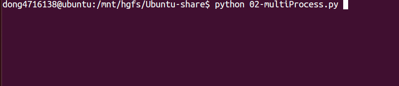

多次fork问题
如果在一个程序，有2次的fork函数调用，是否就会有3个进程呢？
#coding=utf-8
import os
import time
# 注意，fork函数，只在Unix/Linux/Mac上运行，windows不可以
pid = os.fork()
if pid == 0:
print('哈哈1')
else:
print('哈哈2')
pid = os.fork()
if pid == 0:
print('哈哈3')
else:
print('哈哈4')
time.sleep(1)
运行结果： 
说明：

父子进程的执行顺序
父进程、子进程执行顺序没有规律，完全取决于操作系统的调度算法